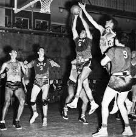

Origem do Esporte
O basquete foi inventado em 1891 por James Naismith, um professor canadense, em Springfield, Massachusetts.
.jpeg)
O esporte surgiu como uma alternativa ao inverno rigoroso da região, diferentemente dos outros praticados ao ar livre como o basebol e o futebol americano. A ideia original era criar um esporte menos violento que o futebol americano. Além disso, James Naismith pretendia criar uma maior integração entre os alunos nas aulas de Educação Física e estimular a coletividade dos grupos.
O primeiro jogo oficial de basquete foi disputado em 1892, e teve uma plateia aproximada de 200 pessoas. Em 1893, o primeiro jogo feminino foi oficialmente jogado no Smith College, em Massachusetts, EUA.
Evolução
O basquetebol desenvolveu-se quando o professor James Naismith publicou as 13 regras para jogar basquetebol, em 1892. O primeiro jogo de basquete foi realizado com uma bola semelhante à de futebol e o primeiro modelo de cesta possuía um fundo. Assim, a cada ponto realizado, era necessário subir em uma escada para resgatar a bola.
O primeiro jogo oficial de basquete ocorreu em 20 de janeiro de 1892, em Nova Iorque. O jogo terminou em 1 a 0 (cada cesta valia apenas 1 ponto).
Não demorou para que o fundo da cesta fosse retirado e o jogo pudesse se tornar mais dinâmico. Desde então, as equipes americanas detêm uma hegemonia, conquistando vinte e três das trinta medalhas de ouro disputadas (8 femininas e 15 masculinas).
Em 1946, foi criada a NBA, a liga de basquete dos Estados Unidos, considerado o principal campeonato de basquetebol do mundo. Pela NBA, jogaram (e jogam) os principais nomes do basquete mundial.
Evolução das regras do Basquete
Os primeiros jogos de basquete foram disputados em equipes de nove atletas. Logo após, ainda em 1892, o professor Naismith optou pelo jogo de cinco contra cinco.
Em 1898, foi instituída a regra que impede os dois dribles (quicar a bola, segurá-la e voltar a quicar). Algumas outras regras do basquete foram sendo adaptadas ao longo do tempo.
A tabela (placa retangular localizada atrás da cesta) foi introduzida em 1906, com o objetivo de impedir que os espectadores do jogo que ficavam em mezaninos, interferissem nos arremessos. Isso possibilitou também os rebotes, alterando o modo do jogo.
Em 1954, foi instituída a regra dos 24 segundos, com o objetivo de dar mais velocidade ao jogo. Segundo a regra, cada equipe tem 24 segundos de posse até arremessar a bola à cesta.
Com o objetivo de dar mais dinamismo ao jogo, a Federação Internacional de Basquetebol (FIBA) propôs uma nova mudança. A partir de 2018, o limite para o arremesso em caso de rebote ofensivo passou a ser de 14 segundos (antes eram os mesmos 24 segundos).
Veja também: Regras do basquete (atualizado).

Hoje, é um dos esportes mais populares do mundo.